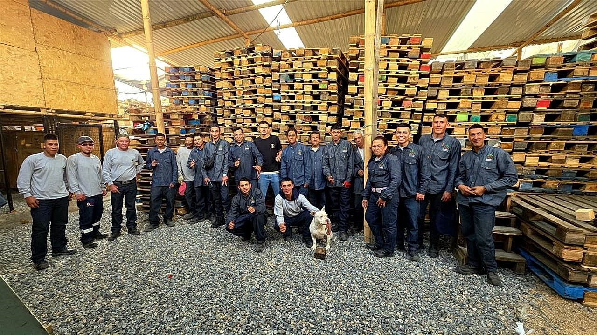
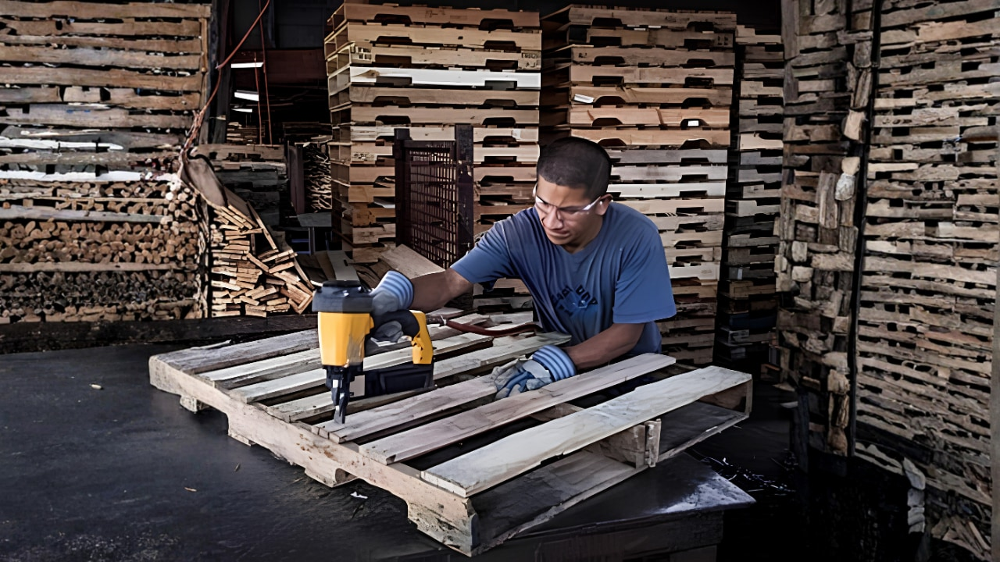
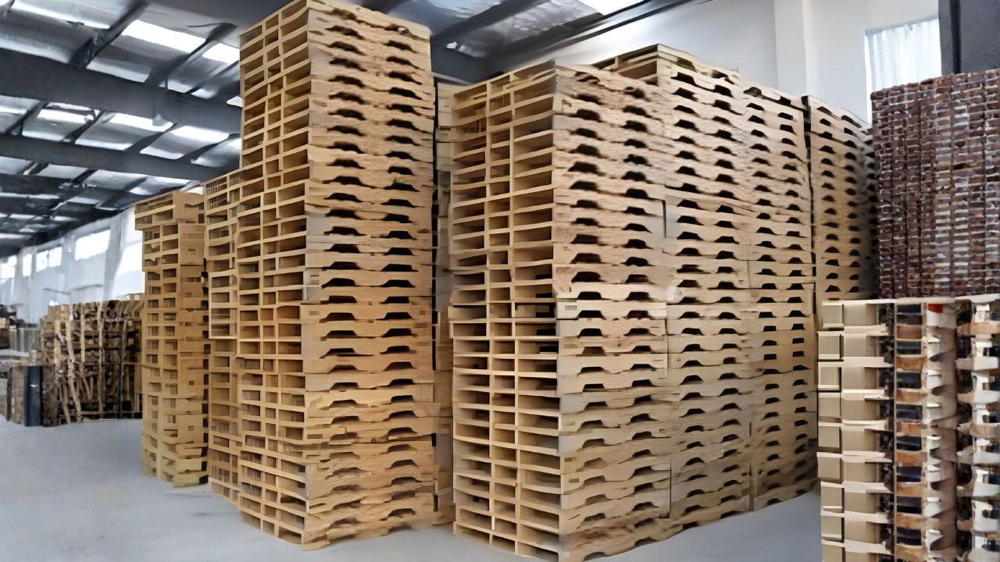
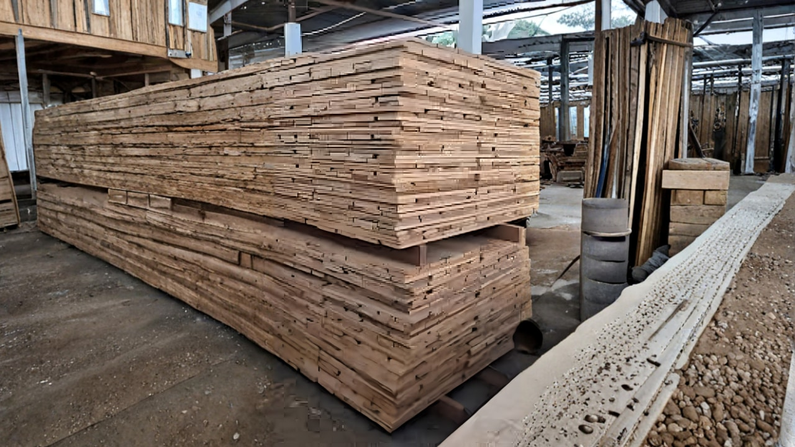

Cómo elegir el proveedor de estibas correcto en Cundinamarca
Elegir el proveedor de estibas adecuado es crucial para la eficiencia logística de tu negocio. Aquí te damos los mejores consejos para tomar una decisión informada.
Mantenimiento preventivo de estibas para evitar accidentes y pérdidas
El mantenimiento preventivo de estibas es crucial para la seguridad en el manejo de carga. Conoce las mejores prácticas para evitar accidentes y pérdidas en tu negocio.
Estiba tipo norma vs. tráfico liviano: cuál necesita tu bodega
Entiende las diferencias clave entre estibas tipo norma y de tráfico liviano para elegir la mejor opción para tu bodega en Colombia.
Estiba tipo norma vs. tráfico liviano: ¿cuál necesita tu bodega?
Conoce las diferencias entre estibas tipo norma y tráfico liviano para elegir la mejor opción para tu bodega y optimizar la logística de tu negocio.
Normatividad y buenas prácticas en el manejo de estibas de madera en Colombia
Descubre la normatividad y las mejores prácticas para el manejo de estibas de madera en Colombia, garantizando eficiencia y cumplimiento legal en tu operación logística.
Reparación de estibas en Bogotá: la guía definitiva para empresas
Conoce todo lo que necesitas sobre la reparación de estibas en Bogotá y cómo puede beneficiar a tu empresa en costos y eficiencia logística.
Errores comunes al comprar estibas de madera y cómo evitarlos
Al comprar estibas de madera, hay errores que pueden costar tiempo y dinero. Aprende a evitarlos y mejora tu proceso logístico.
Fabricación de estibas a medida: optimiza tu operación logística
La fabricación de estibas a medida puede ser la solución perfecta para mejorar tu eficiencia logística. Conoce cuándo es el momento perfecto para considerar esta opción.
Reparación de estibas en Bogotá: optimiza tus recursos logísticos
La reparación de estibas en Bogotá es una estrategia clave para optimizar recursos logísticos y reducir costos. Conoce los beneficios y cómo implementarla en tu empresa.
Estiba tipo norma vs. tráfico liviano: ¿cuál necesita tu bodega?
Conoce las diferencias clave entre las estibas tipo norma y tráfico liviano para elegir la mejor opción para tu bodega y optimizar tu logística.
¿Reparar o comprar estibas nuevas? La decisión clave en Bogotá
La decisión de reparar o comprar estibas nuevas puede afectar significativamente los costos operativos. Descubre cómo tomar la mejor elección para tu empresa en Bogotá.
Reparación de estibas en Soacha y Cundinamarca: ¡servicio in-situ!
Conozca el servicio de reparación de estibas que ofrecemos en Soacha y Cundinamarca, ideal para empresas y bodegas que buscan soluciones efectivas y económicas.
¿Quién repara estibas en Bogotá? Encuentra el mejor servicio
¿Necesitas reparar estibas en Bogotá? Te contamos cómo elegir la empresa adecuada y qué esperar del servicio para asegurar la calidad y durabilidad de tus pallets.
Estibas usadas vs. nuevas: ¿cuál es la mejor opción para tu empresa?
¿Estás considerando la compra de estibas para tu empresa en Bogotá? Aquí analizamos las ventajas y desventajas de optar por estibas usadas o nuevas.
Reparación de estibas en Bogotá: ahorra y alarga la vida de tus pallets
Optimiza tus costos y prolonga la vida de tus pallets con la reparación de estibas en Bogotá. Aprende cómo hacerlo de manera efectiva.

7 señales de que tus estibas necesitan reparación urgente
Antes de que una estiba colapse con carga encima, da avisos. Aprende a leerlos y evita costos, accidentes y paradas de operación.
Economía circular aplicada: cómo una multinacional redujo cerca del 40% sus costos en estibas
No es teoría: cuando una empresa dejó de comprar pallets nuevos y empezó a reparar e intercambiar, los números cambiaron. Caso real, decisiones reales.

Tipo Norma vs Tráfico Liviano: guía definitiva para bodegas
Comprar la estiba equivocada cuesta tres veces: en plata, en producto dañado y en seguridad del operario. Esta es la decisión que deberías tomar.

Por qué el pino es la mejor madera para estibas (ciencia y oficio)
No es accidente que el 90% de las estibas del país sean de pino. Hablamos de densidad, resistencia, costo y por qué la "madera dura" no siempre es mejor.
Reparación in-situ vs taller: cuál conviene para tu bodega
Mover las estibas al taller parece lo obvio, pero para la mayoría de bodegas es la opción más cara. Desglosamos los costos reales y cuándo usa cada modalidad.